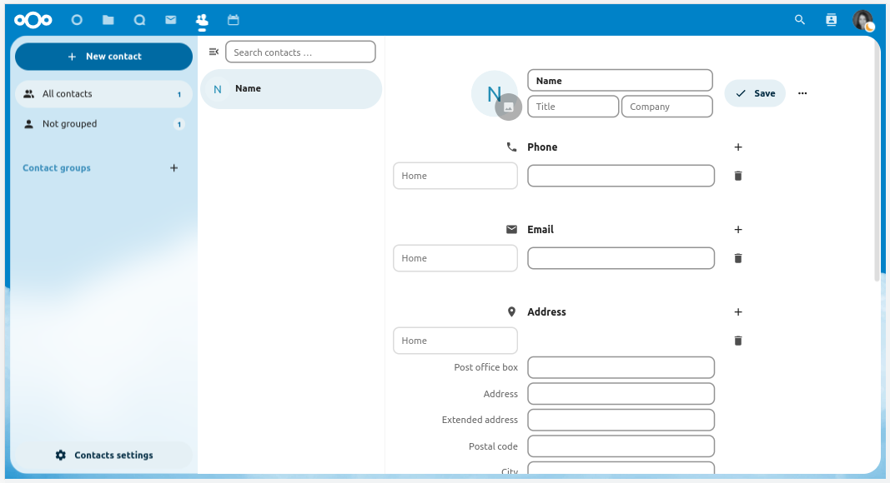
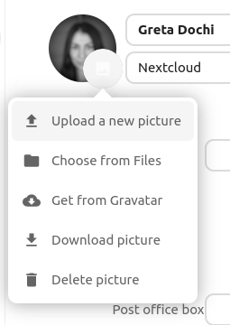
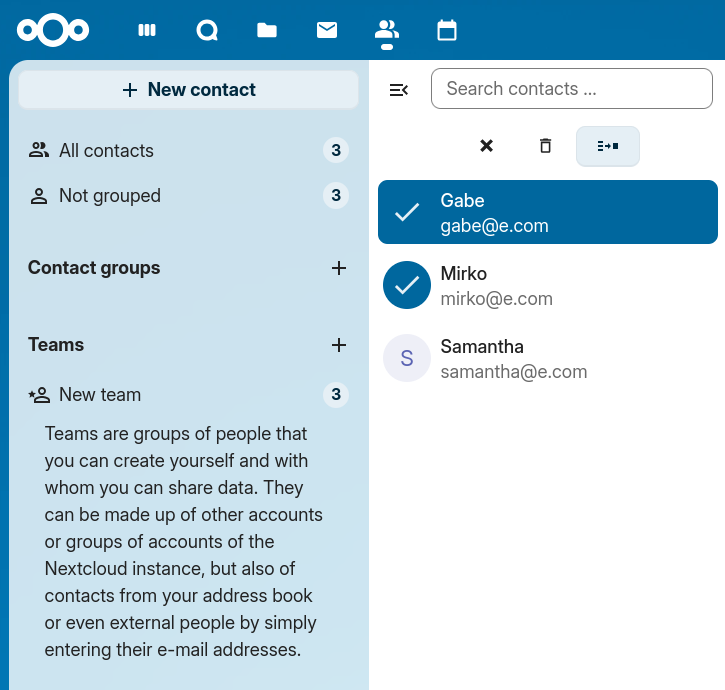

L’application Contact n’est pas active par défaut dans Nextcloud 35 et doit être installée séparément à partir du magasin d’applications
The Nextcloud Contacts app is similar to other mobile contact applications, but
with more functionality.
This section covers the basic features that will help you maintain your address book
in the application.
Vous apprendrez ci-dessous comment ajouter des contacts, les modifier ou les supprimer, téléverser une photo de contact, et gérer vos carnets d’adresse.
Lorsque vous accédez pour la première fois à l’application Contacts, le carnet d’adresses système contenant tous les utilisateurs de l’instance que vous êtes autorisé à voir, ainsi qu’un carnet d’adresses par défaut vide, deviennent disponibles:
Vous pouvez aussi ajouter des contacts manuellement, si vous ne disposez pas de fichiers à importer.
Pour ajouter un nouveau contact :
Cliquer le bouton « Nouveau contact ».
La configuration de la vue d’édition s’ouvre dans le champ Vue d’application :

Spécifiez les nouvelles coordonnées puis cliquez sur Enregistrer.
Le mode d’affichage s’affichera avec les données que vous avez ajoutées
Modifier ou supprimer des informations sur un contact
L’application Contacts vous permet de modifier ou supprimer des informations sur un contact.
Pour modifier ou supprimer des informations sur un contact :
Ouvrez la fiche du contact que vous souhaitez modifier.
Sélectionnez l’information que vous souhaitez modifier ou supprimer.
Effectuez vos changements ou supprimez l’information en cliquant sur l’icône de corbeille.
Les modifications ou suppressions effectuées sur un contact sont sauvegardées immédiatement.
Tous les contacts ne sont pas modifiables pour vous. Le carnet d’adresses du système ne vous permet pas de modifier les données de quelqu’un d’autre, uniquement les vôtres. Vos propres données peuvent également être modifiées dans les paramètres utilisateur.
Pour ajouter une image de contact, cliquez sur le bouton de téléversement :
Une fois le téléversement effectué, l’image de contact devrait être définie :
En cliquant sur l’image de contact, des options apparaissent, permettant d’en téléverser une nouvelle, de la supprimer, de la visualiser en taille réelle, ou de la télécharger :

Si l’administrateur autorise les mises à jour depuis les médias sociaux dans les paramètres d’administration de Groupware, les utilisateurs peuvent alors récupérer les images des contacts directement depuis les réseaux sociaux. Dans ce cas, le contact a besoin d’avoir un nom d’utilisateur enregistré dans la section des médias sociaux. Chaque entrée relative à un média social pris en charge ajoute une entrée de téléchargement pour le réseau social correspondant. Actuellement, les réseaux sociaux pris en charge sont les suivants :
Instagram
Mastodon
Tumblr
Diaspora
Xing
Telegram
Gravatar
Les avatars des réseaux sociaux ne sont récupérés que s’ils sont disponibles publiquement sans avoir besoin de se connecter au réseau social correspondant. Dans les Paramètres généraux des Paramètres de Contacts, vous pouvez activer la mise à jour automatique depuis les réseaux sociaux. Cela actualisera les avatars avec les données des profils sociaux sur une base hebdomadaire. Les réseaux sociaux sont consultés dans l’ordre indiqué plus haut.
L’application Contacts vous permet de sélectionner plusieurs contacts et d’effectuer dessus des actions par lot. Pour sélectionner plusieurs contacts, vous pouvez soit cliquer sur chacune des images de profil des contacts, les unes après les autres, soit cliquer sur l’image de profil du premier contact, puis, tout en maintenant la touche shift enfoncée, cliquer sur un autre contact de la liste afin de sélectionner tous les contacts qu’il y a entre le premier et le second.
Cela fera apparaître un menu en haut de la liste des contacts avec différentes actions qu’il est possible d’effectuer sur les contacts sélectionnés :

En mode par lot, le bouton-icône qui représente la croix va désélectionner tous les contacts sélectionnés, tandis que le bouton-icône de la corbeille va supprimer tous les contacts sélectionnés.
Note
Il est possible que vous ne puissiez pas modifier ou supprimer certains contacts, par exemple s’ils sont dans un carnet d’adresses en lecture seule. Dans ce cas, les actions concernées seront désactivées.
Pour fusionner des contacts, sélectionnez-en deux puis cliquez sur le bouton-icône « Fusionner les contacts » en haut de la liste des contacts. Cela ouvrira une boîte de dialogue pour vous aider à fusionner les doublons. Ce dialogue de fusion affichera les détails des deux contacts côte à côte et vous pourrez choisir les détails à conserver dans le contact fusionné.
Les propriétés avec des boutons radio (circulaires) ne peuvent avoir qu’une seule valeur, ce qui implique qu’une seule des deux valeurs doit être sélectionnée (comme le nom du contact, lequel ne peut avoir qu’une seule valeur), alors que les cases à cocher (boutons carrés) vous permettent de garder les deux valeurs si vous voulez (comme les numéros de téléphone ou les adresses e-mail, qui peuvent avec plusieurs valeurs).
Si l’un ou l’autre des contacts fait partie d’un ou plusieurs groupes, le contact fusionné fera, par défaut, partie de tous les groupes dont faisaient partie les deux contacts. Vous pouvez décocher des groupes lors de la fusion si vous ne souhaitez pas que le contact fusionné en fasse partie.
Note
Actuellement, vous n’êtes en mesure de fusionner que deux contacts à la fois, et vous ne pouvez naturellement fusionner que des contacts que vous pouvez modifier. Si l’action de fusion est désactivée, vérifiez que vous avez sélectionné des contacts qui répondent à ces conditions.
Now you can mark contacts as favorites to always find them at the top of your contacts list, without needing to search or filter.
To mark a contacts as favorite, hover over a contact, a star will show on the right. Click the star and a yellow star will appear on the contact’s avatar to confirm it’s been marked as a favorite.
To remove it form the favorite list - Hover over a favorited contact, and click the star on the right. The star will disappear and the contact will return to its alphabetical position in the list.
Organiser vos contacts avec les Groupes de contacts
Les Groupes de contacts vous aident à organiser vos contacts en groupes.
Pour créer un nouveau groupe de contacts, cliquez sur le symbole plus à côté de « Groupes de Contacts » dans la barre latérale à gauche.
Note
Les groupes de contacts doivent comporter au moins un membre pour pouvoir être enregistrés. Veuillez noter que vous ne pouvez ajouter à des groupes de contacts que des contacts issus de carnets d’adresses accessibles en écriture. Les contacts provenant de carnets d’adresses en lecture seule, tels que ceux du carnet d’adresses du système, ne peuvent pas être ajoutés.
Cliquez sur le bouton « Paramètres » (avec une icône de roue dentée) en bas de la barre latérale gauche. Vous y verrez l’ensemble de vos carnets d’adresses (avec des options : téléchargement, lien, partage), ainsi qu’un champ texte permettant l’ajout d’un nouveau carnet d’adresses, en spécifiant son nom :
Les paramètres Contacts vous permettent également de partager, d’exporter et de supprimer des carnets d’adresses. Vous y trouverez les URL CardDAV.
Note
Les contacts des carnets d’adresses désactivés ne sont pas affichés dans l’application Contacts ni dans le menu Contact.
Pour plus de détails sur la synchronisation des carnets d’adresses avec iOS, macOS, Thunderbird, et d’autres clients CardDAV, consultez la page Groupware.
La collaboration informelle se déroule au sein des organisations : un événement à organiser pendant quelques semaines, une courte séance d’idéation entre membres de différentes entités, des ateliers, un lieu pour plaisanter et soutenir le team building, ou simplement dans des organisations très organiques où la structure formelle est réduite au minimum.
Pour toutes ces raisons, Nextcloud prend en charge les Équipes, une fonctionnalité intégrée à l’application Contacts, où chaque utilisateur peut créer sa propre équipe, un agrégat de comptes défini par l’utilisateur. Les équipes peuvent être utilisées ultérieurement pour partager des fichiers et des dossiers, ajoutées aux conversations Talk, comme un groupe normal.
Dans le menu de gauche, cliquez sur le + près de Équipes. Définissez un nom pour l’équipe. Une fois arrivé sur l’écran de configuration de l’équipe, vous pouvez :
ajouter des membres à votre équipe
cliquer sur le menu à trois points à côté de l’utilisateur pour vous permettre de modifier son rôle au sein de l’équipe.
Admin, peut configurer les options d’équipes (+permissions modérateur)
Propriétaire
Membre
Le rôle Membre est celui qui dispose des permissions les plus basses. Un membre peut uniquement accéder aux ressources partagées avec l’équipe et voir les membres de celle-ci.
Modérateur
En plus des permissions des membres, un modérateur peut lancer des invitations, confirmer des invitations et gérer les membres de l’équipe.
Admin
En plus des permissions de modérateur, un administrateur peut configurer les options de l’équipe.
Propriétaire
En plus des permissions d’administrateur, un propriétaire peut transférer la propriété de l’équipe à un autre de ses membres. Il ne peut y avoir qu’un seul propriétaire par équipe.
Des comptes locaux, des groupes, des adresses e-mail ou d’autres équipes peuvent être ajoutés en tant que membres dans une équipe. Pour un groupe ou une équipe, le rôle s’applique à tous les membres du groupe ou de l’équipe.
Diverses options explicites sont disponibles pour configurer une équipe, pour gérer les invitations et les adhésions, la visibilité de l’équipe, l’autorisation d’adhésions d’autres équipes et la protection par mot de passe.
Empêcher des équipes de devenir membres d’une autre équipe
Quand cette option est activée, l’équipe ne peut plus être directement ajoutée en tant que membre d’une autre équipe. Cependant, cette restriction ne s’applique qu’aux nouveaux ajouts directs. Les adhésions existantes sont conservées, et des adhésions héritées restent possibles si cette équipe appartient à une équipe parente qui est ajoutée ailleurs.
Les éléments partagés entre deux contacts seront affichés dans l’application de contact. Cela inclut les médias, les évènements, les salles de discussion, et les jeux de cartes partagés, le tout visible dans les détails du contact. Cette fonctionnalité est limitée aux contacts présents dans la liste d’adresses du système. Actuellement, notre système supporte seulement les éléments partagés entre deux contacts.